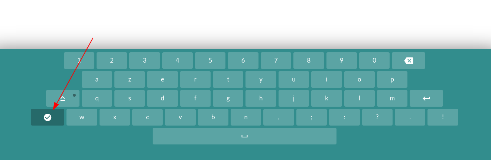

Cliquer dans le champ de saisie pour faire apparaitre le clavier virtuel.
Le clavier virtuel permet à un utilisateur ne possédant pas de claiver d'effectuer une saisie grâce à la souris (ou le doigt sur un écran tactile).
Pour fermer le clavier virtuel, cliquer sur la touche avec une coche située sur la gauche du clavier.
